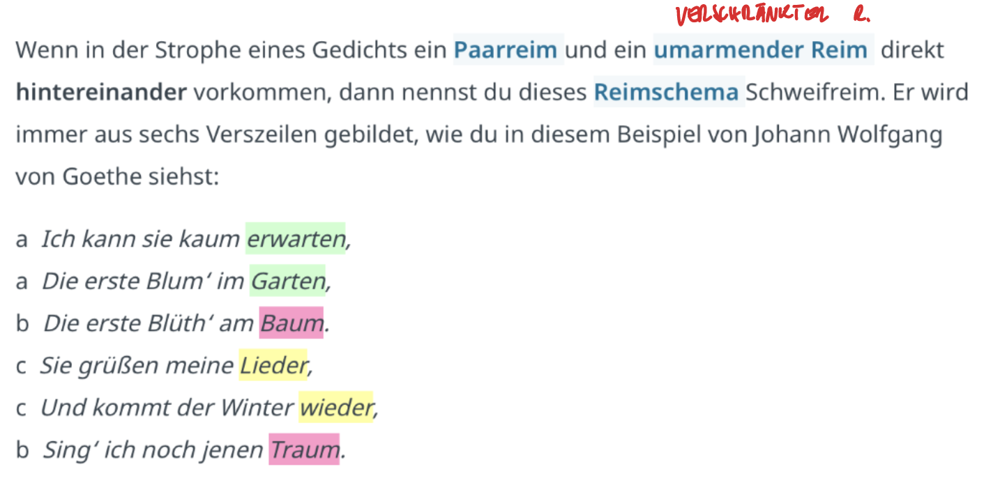
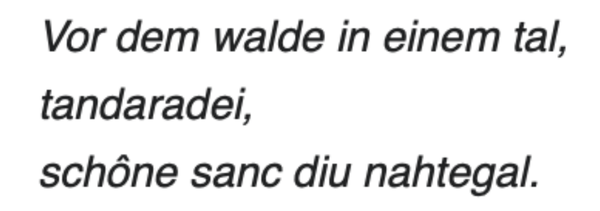
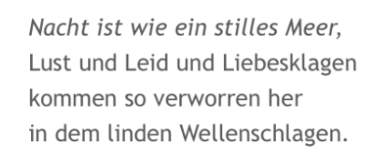
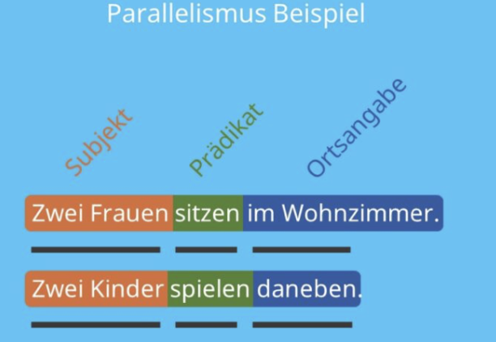

Anki
In Prosa
Es reimt sich nichts (ungebundene Sprache)
5. Akt Schema: Seit Aristoteles
- Expositur: Einleitung
- Aufsteigende Handlung (Steigerung)
- Klimax: Höhepunkt
- Absteigende Handlung (Verzögerung)
- Ende: Katastrophe (Tragödie) oder Happy End/Lösung (Komödie)
Zäsur
In den Sonettgedichten; Pause im Versinneren
Ode
Lobgedicht → Ode an die Freude: Europäische Hymne (Text: Schiller, Melodie: Beethoven)
Unreiner Reim
Etwas reimt sich nicht 100%, sondern Wörter ähnelt sich nur.

Beispiel: unreiner Reim
Schweifreim
Besteht aus 6 Versen: Auf einen Paarreim folgt ein verschränkter Reim
 Beispiel: Schweifreim
{kind=link}
Ein „Waise”
Kind, dass keine Eltern mehr hat (Vollwaise, Halbwaise)
In der Lyrik: Vers passt nicht zu den anderen
 Beispiel: Waise in der Lyrik → tandaradei
{kind=link}
Verslehre
Metrik
Alexandriner
6-hebiger Jambus mit Zäsur
Sonett
Gedichtsform → Typisch für die Barrockzeit
Lyrisches Ich
Ich-Erzähler in einem lyrischen Gedicht
Refrain
Der sich wiederholende Teil eines Liedes
Knittelvers
 Vierhebiger Vers mit Paarreim
Vierhebiger Vers mit Paarreimz.B.: Faust: „Da steh ich nun, ich armer Tor! Und bin so klug als wie zuvor.”
Komparation
Steigerung(Steigerungsstufen: Positiv, Komparativ, Superlativ)
Ständeklausel
Tragöde → im adeligen Milieu
Komödie → im bäuerlichen Milieu
erster Deutscher mit Lateinischem Endreim
Ottfried von Weißenburg
Reimarten
Endreim ist das Gegenteil vom Stabreim
- Paarreim (a-a-b-b)
- Kreuzreim (a-b-a-b)
- verschränkte Reim (a-b-b-a) → Lateinischer Endreim
Versmaße
- Jambus: Senkung-Hebung
- Trochäus: Hebung-Senkung
- Daktylus: Hebung-Senkung-Senkung
- Anapäst: Senkung-Senkung-Hebung
Lautmalerei
Onomatopoesie
Lautgedicht
Ernst Jandl → Er schreibt, dass was er hört.
Anapher
2 oder mehrere Sätze beginnen mit dem selben Wort → Pendant: Epipher
Antagonist und Pendant
Bösewicht → Pendant: Protagonist
Antithese
Gegensatzpaare (Gut und Böse)
Elegie: Klagegedicht
Herzschmerz (melancholische Inhalte)
4 Temperamente
- Choleriker: Person, die schnell aus der Haut fährt; jähzornig
- Sanguiniker: Optimist, gut gelaunt
- Phlegmatiker: Person, die nichts aus der Ruhe bringt
- Melancholiker: depressive Grundeinstellung, introvertiert
Ellipse
Das bewusstes Auslassen von Satzteilen
Enjambement
Verssprung eines Gedichts → Sinneinheit geht über die Verszeile hinaus
 Beispiel für ein Enjambement
{kind=link}
Enumeration
Aufzählung
Epilog
Nachwort
Prolog
Vorwort
Epigramm
Kurze Gedicht, oft mit satirischen Texten → findet man oft an Gräbern
Parallelismus
Syntaktisch, paralleler Satzbau von mindestens 2 Versen oder Zeilen.
 Beispiel: Parallelismus
{kind=link}
Modus
Aussageart und Weise
- Imperativ
- Indikativ
- Konjunkativ 1
- Konjunkativ 2
Fiktion
etwas Erfundenes
Balladenjahr
1797
Erzählendes Gedicht
vereint Lyrik-Epik-Dramatik
Arten von Balladen
Geisterballade (z.B.: Erlkönig)
Ideenballade (z.B.: der Handschuh (negativ) → Ideal wird nicht erfüllt, die Bürgschaft → Ideal der Treue)
Erzählsituationen
- Ich-Erzähler
- Personale Erzählsituation
- Auktoriale Erzählsituation
- Neutraler Erzähler
Personale Erzählsituation
Erzähler fehlt komplett; Geschichte wird durch die Augen der Romanfiguren erzählt.
Auktoriale Erzählsituation
Erzähler selbst kommt im Roman als Figur nicht vor, sondern tritt nur mit Kommentaren zum Vorschein; Er ist allwissend (hat alle Infos).
Neutraler Erzähler
Er kommentiert das Geschehen nicht, sondern beschreibt das, was von außen sichtbar ist.
Interjektion
Ausrufewort (z.B.: „Hurra!”) → Ende mit Rufezeichen oder Beistrich
Interrobang
!?-Kombination → Frage mit entsetzten
Zeitdeckung
Erzählzeit und die erzählte Zeit sind ziemlich gleich lang → Sekundenstil
Zeitdehnung
Spielzeit dauert länger als die erzählte Zeit.
Zeitraffun
Spielzeit dauert kürzer als die erzählte Zeit.
Zeitsprung
Erzählte Zeit weicht von einem chronologischen Ablauf ab.
Die erzählte Zeit
die Zeit, in der die Geschichte spielt
Die Erzählzeit
Die Zeit, die real vergeht (Lesezeit)
Erzähltempo
Verhältnis zwischen Erzählzeit und erzählter Zeit
Direkte Rede
Merkmal: Anführungszeichen
Inquit-Formel
Redeeinleitung → verbum dicendi
Diminutivformen
Verniedlichungsform: …chen und …lein → z.B.: Märchen: kleine Geschichte (Mär), Mädchen: Magd
Verblasste Diminutivformen: Eigentliches Wort wird verkürzt
Zynismus
beißender Spott; gegen gesellschaftliche Normen gerichtet
Sarkasmus
doppeldeutige Beleidigung an eine Person gerichtet
Homonyme
Ein Wort hat mehrere Bedeutung (z.B.: Mutter → Mutter und Schraubenmutter; Bank → Sitzbank, Bank für Geld)
Litotes
Sachverhalte werden durch doppelte Verneinung genannt. z.B.: Er ist nicht schlecht → hebt sich auf
Wortspiel
Doppeldeutigkeiten werden dargestellt
Medias in res
Geschichte startet mitten im Geschehen; keine Zusatzinformationen → Kurzgeschichten
Metapher
Bildhafter Ausdruck
Verblasste Metapher
Metaphern hat die ursprüngliche Stärke verloren und wird im täglichen Lebens verwendet wie z.B.: Tischbein
Akt
Hauptabschnitt der Handlung (in der Dramatik) → Ende: Vorhang geht zu
Klimax
in der Dramatik → Höhepunkt; in der Rhetorik: Auflistung mit steigendem Charakter (meist 3-teilig)
Wendepunkt
bei der Novelle
Teichoskopie/Mauerschau
Kommentar von einer Figur auf der Bühne über einen anderen Ort, den man nicht sieht.
Verfremdungseffekt
„V-Effekt“
„Bei Seite Sprechen” (Dramatik) → Schauspieler wendet sich direkt an das Publikum mit einem Kommentar über dieses Theaterstück
Das Publikum wird desillusioniert
es wird eine andere Welt vorgetäuscht und die Illusion wird genommen
Binnenhandlung
Ein optionales Merkmal der Novelle → muss in nicht verwendet werden
Beispiel: in der Schachnovelle
Binnenreim
Endreim → zwei oder mehrere Wörter reimen sich innerhalb einer Verszeile
Botenbericht
Begriff nur aus der Dramatik
Jemand gibt Informationen darüber, was vorher geschehen ist → vor der Haupthandlung
Personifikation
Einer Sache werden menschliche Eigenschaften übertragen → die Sonne lacht
Depersonifikation
(Gegenteil von Personifikation): der „Lehrkörper” → Lehrer einer ganzen Schule
De-Des-Dis (Vorsilbe): Präfix → das Gegenteil
innerer Monolog Merkmale
Ellipse, Gedankensprünge, Dialekt → z.B.: Leutnant Gustl
Einheit von Handlung, Zeit und Ort
Aristoteles Regeln des Dramas:
- keine Nebenhandlung
- keine Ortswechsel
- Handlung darf nicht über 1 Tag hinausgehen
Offene Form
Gegenteil von Einheit von Handlung, Zeit und Ort → Nebenhandlungen, Ortswechsel und große Zeitsprünge.
Sekundenstil
Geteilgetreue Darstellung für etwas → vorallem in der Epoche des Naturalismus (schlechtes und hässliche Darstellung → ohne Verklärung)
Euphemismus
Beschönigung
Fallhöhe
Je höher, der Rang der fallender Person, desto schlimmer ist die Wirkung auf das Publikum (Dramatik).
Figurenkonstellation:
Beziehung zwischen den Personen in einem Theater.
Figurenrede
Dramatik zuzuordnen → Wenn die Personen in Form eines Monolog oder Dialogs sprechen
Die gespielte Zeit:
Entspricht der im Text dargestellten Zeit
Haupttext
Dramatik zuzuordnen → Der von den Figuren gesprochene Text
Nebentext
Regieanweisungen
Parataxe
Hauptsatzreihe
Hypotaxe
Satzgefüge
Inversion
Umkehrung → Die übliche grammatikalische Wortreihenfolge wird umgestellt
Pathos
Etwas ist mit viele Gefühlen überladen.
Oxymoron und Paradoxon
Widerspruch in einer Aussage
Apposition
Einschub → z.B.: Karl der große, ein mächtiger Kaiser des Frühmittelalters, lebte in Aachen.
Parenthesen
Satz wurde durch eine Apposition unterbrochen.
Pleonasmus
überflüssiges Verb z.B.: der kleine Zwerk
Pointe
Höhepunkt
Suggestiv-Frage
In der Frage ist schon das, was man hören will z.B.: Was haltet ihr von meinen coolen, neuen Schuhen?
Spielzeit
Die Zeitspanne, die zur Aufführung verwendet wird.
Strophe
Gliederungsabschnitt in einem Gedicht (aus mind. 2 Verszeilen)
Szene
Unterteilung eines Aktes.
Tautologie
Wiederholung eines Ausdrucks mit anderen Wörtern, der gleichen Wortart oder auch dem genau gleichen Wort z.B.: nackt und bloß
Theatralität
- Mimik, Gestik
- Intonation (Wie etwas betont wird)
- Requisiten/Spieldinge (Masken, Verkleidung)
- Kulisse → Hintergrund
Utopie
Gibt Auskunft darüber, wie die Zukunft aussehen könnte → meist Wunschvorstellungen
Dystopie
Gesellschaft wird negativ dargestellt.
Vorausdeutung
Überlegungen, was die Zukunft bringen kann.
Walter von der Vogelweide
Bekanntester Deutscher Minensänger
Synekdoche
Ein Wort wird durch ein sinnverwandtes Wort ersetzt z.B.: Statt Tiger, Raubkatze